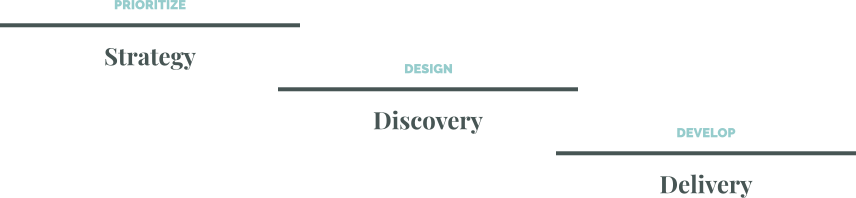
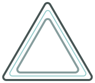
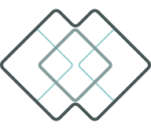

A product model is a conceptual approach for creating products that deliver value to users while achieving desired business outcomes, rather than merely producing output. It anchors organizational decisions and guides how the business navigates strategic opportunities. In an era of rapid change, embracing an adaptive practice ensures that an internal product vision remains resilient against external market shifts.
At the core of this model, which integrates proven frameworks and methodologies, is a crucial framework being termed Tri-Track Agile. It enhances the foundational value of Dual-Track Agile by introducing a third, parallel track for strategy. This continuous strategic loop establishes direction for, and assimilates insights from, the ongoing discovery and delivery tracks.

The added strategy track runs continuously alongside discovery and delivery to define the problems that subsequent builds aim to solve. It relies on a core set of leaders working with stakeholders to identify the most important user and business problems to solve. This prioritization is critical for making progress on a user-centered product vision and achieving high-level business goals.

The outcome-driven approach naturally lends itself to a Vision-Led Strategy that describes a compelling future state of the product for the end user, grounding long-term qualitative goals in intrinsic value to navigate short-term market dynamics. To scale these outcomes sustainably, the ecosystem integrates a Product-Led Growth strategy, focusing on seamless user experiences that convert customers into loyal brand advocates and drive recurring revenue. By intentionally designing self-service onboarding, monetization, and growth levers, the product operates as a growth engine and becomes the primary driver of acquisition, retention, and scaling.
Central to evaluating strategic opportunities is the DVF Framework, which weighs user desirability, business viability, and technical feasibility. This structure ensures that initiatives are supported across all three lenses, importantly making balanced decisions to guide the pursuit of the best solutions.
The strategy track determines the priority of the problems to solve along with the desired outcomes to achieve. This continuous strategic loop provides the essential guardrails that ensure the discovery track can translate strategic intent into meaningful validation.
The discovery track is where the team continuously validates what to build that best solves the problems. Discovery challenges solution ideas directly with users before dedicating engineering resources. This focus on human connection mitigates bias and accelerates development by preventing costly rework.

Whole Product Design is a holistic style of User-Centered Design that places the user's needs, behaviors, and limitations at the heart of development, while integrating business objectives, engineering feasibility, marketing brand promises, sales expectations, and support communication. Thoughtfully guiding this end-to-end user experience helps lower acquisition costs, boost conversions, and maximize retention.
As the mechanism for verifying strategic intent, the Double Diamond Design framework is ideal for quickly diverging and converging on the right problem first and then the best solution. The team is empowered and accountable for understanding the root of the problem and then rapidly determining the optimum solution that is desirable, viable, and feasible.
Naturally, the discovery process evolves into continuous experimentation, mitigating risk by rapidly forming clear hypotheses, testing the riskiest assumptions, and making proactive strategic adjustments. Transforming raw user insights and data, including the automated synthesis of complex datasets, into quality blueprints requires a structured design practice to ensure clarity.
The discovery track creates a cycle of actionable learning rather than static requirements. This evidentiary loop ensures development concentrates on solutions that are optimized to address root user and business problems.
The delivery track is where the team continuously develops and deploys builds addressing the problems’ solutions. Solutions are shipped via frequent, reliable, and decoupled releases, incorporating robust instrumentation to monitor performance and capture user metrics. Cultivate a high-performing development culture that filters out unproven features through parallel strategy and discovery loops.
This atmosphere gives developers the operational runway to champion an Architecture-First mindset. Providing the architectural modularity required to integrate emerging technologies and generate code at maximum speed. Consequently, development decisions are anchored to long-term code health and system scalability, firmly prioritizing technical sustainability.
While Agile Development methodologies vary, they share a priority in satisfying the user and growing the business through early and continuous delivery of valuable solutions. Equally essential is daily collaboration between the business and product development to maximize the amount of work not to be done.
The delivery cycle utilizes deployment operations that prioritize system stability. Advanced release strategies, such as beta testing, canary deployments, and progressive rollouts, decouple code deployment from feature availability. This minimizes operational risk while providing evidence to inform the strategy track.
In this model, delivery extends beyond deployment to Operational Ownership. The development team is responsible for the health, performance, and long-term viability of the services. By uniting development with ongoing operational rigor, the team evolves from mere builders into stewards, incentivized to prioritize system stability and proactively resolve technical debt.
The delivery track transforms strategic intent into measurable user reality. By anchoring our development in architectural sustainability and shared stewardship, we maintain a steady flow of value without compromising system integrity.
Ultimately, the Adaptive Product Model is a commitment to a unified product ecosystem. By tightly integrating strategic direction, exploratory design, and coordinated development, the mechanical production of output is transcended into a system that consistently generates meaningful outcomes for users and the business.